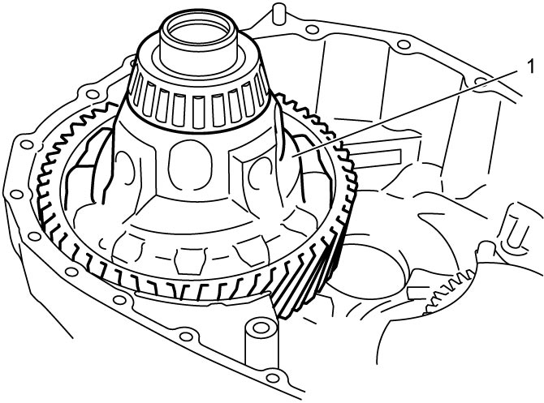
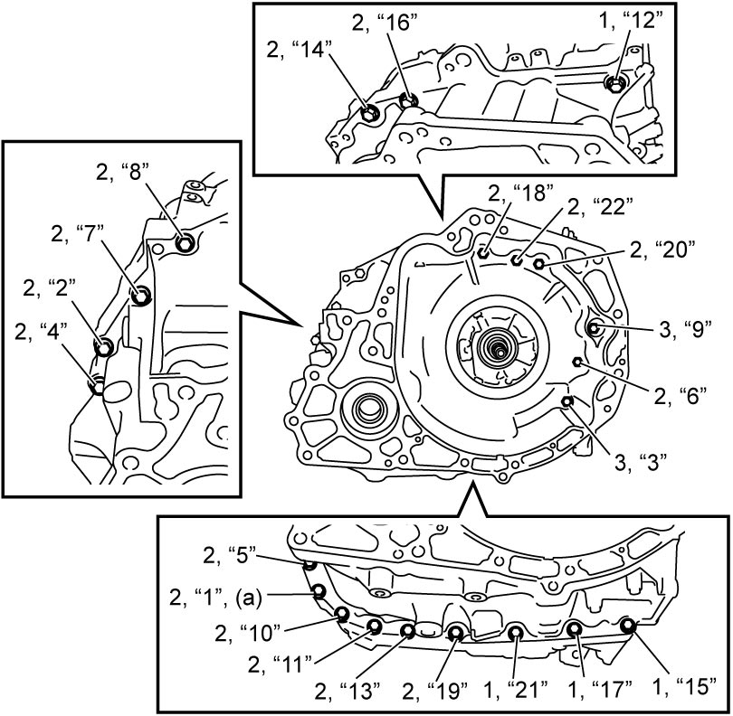
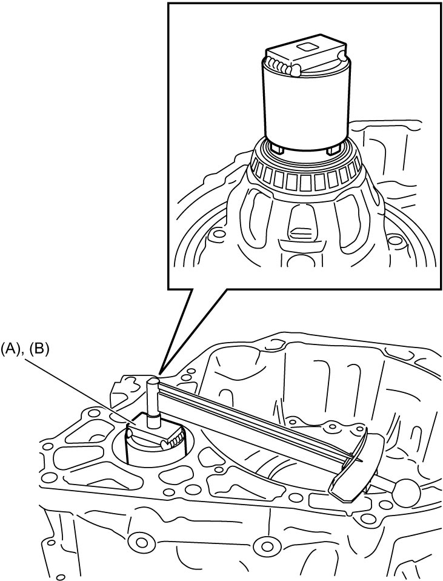
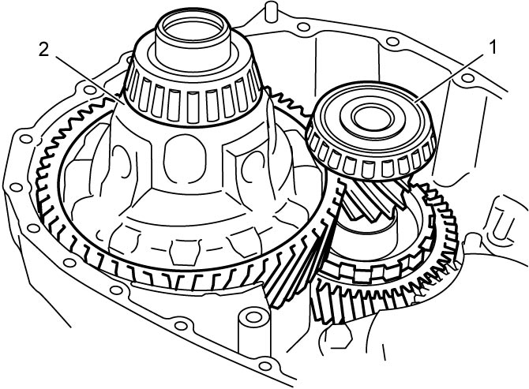

5A
| A/T Assembly Inspection and Adjustment |
Inspection
1st and reverse brake
Refer to 1st and Reverse Brake Inspection.
B1 brake
Check for damage, wear or discolor in lining.
If faulty condition is found, replace B1 brake.
Adjustment
Differential side bearing preload
1)After applying ATF to differential assembly (1), fit it to transaxle case.


 "Expand image")
2)Install torque converter housing to transaxle case and tighten torque converter housing bolts in numerical order (“1” – “22”) to specified torque.
NOTE:
There are three kinds of bolts (bolts A (1), B (2) and C (3)) for fixing torque converter housing.
Torque converter housing bolt length
| Bolt | Length | Pieces |
|---|---|---|
| A (1) | 30 mm (1.18 in.) | 4 |
| B (2) | 35 mm (1.38 in.) | 16 |
| C (3) | 39 mm (1.23 in.) | 2 |

 "Expand image")
3)Measure bearing preload using special tool (A) (2WD model) or special tool (B) (4WD model).
Differential side bearing preload measured as starting torque
In case of new bearing: 0.06 – 1.85 N·m (0.61 – 18.86 kgf-cm, 0.05 – 1.40 lbf-ft)
In case of reused bearing: 0.03 – 0.93 N·m (0.31 – 9.48 kgf-cm, 0.03 – 0.70 lbf-ft)

 "Expand image")
4)If check result is not as specified, select shim with suitable thickness from the following table and replace it. Then adjust differential side bearing preload within specification.
NOTE:
Record measured differential side bearing, because it is necessary to adjust countershaft bearing preload.
Available shim thickness
| Thickness | Identification mark |
|---|---|
| 1.00 mm (0.0394 in.) | 0 |
| 1.05 mm (0.0413 in.) | 1 |
| 1.10 mm (0.0433 in.) | 2 |
| 1.15 mm (0.0453 in.) | 3 |
| 1.20 mm (0.0472 in.) | 4 |
| 1.25 mm (0.0492 in.) | 5 |
| 1.30 mm (0.0512 in.) | 6 |
| 1.33 mm (0.0524 in.) | 7 |
| 1.36 mm (0.0535 in.) | 8 |
| 1.39 mm (0.0547 in.) | 9 |
| 1.42 mm (0.0559 in.) | A |
| 1.45 mm (0.0571 in.) | B |
| 1.48 mm (0.0583 in.) | C |
| 1.51 mm (0.0594 in.) | D |
| 1.54 mm (0.0606 in.) | E |
| 1.57 mm (0.0618 in.) | F |
| 1.60 mm (0.0630 in.) | G |
| 1.65 mm (0.0650 in.) | H |
| 1.70 mm (0.0669 in.) | J |
| 1.75 mm (0.0689 in.) | K |
| 1.80 mm (0.0709 in.) | L |
| 1.85 mm (0.0728 in.) | M |
| 1.90 mm (0.0748 in.) | N |
5)Remove differential assembly.
Differential side bearing and pinion and counter driven gear bearing preload
1)After applying ATF to pinion and counter driven gear assembly (1) and differential assembly (2), fit them onto transaxle case.

 "Expand image")
2)Install torque converter housing to transaxle case and tighten torque converter housing bolts in numerical order (“1” – “22”) to specified torque.
NOTE:
There are three types of bolts (bolts A (1), B (2) and C (3)) for fixing torque converter housing.
Torque converter housing bolt length
| Bolt | Length | Pieces |
|---|---|---|
| A (1) | 30 mm (1.18 in.) | 4 |
| B (2) | 35 mm (1.38 in.) | 16 |
| C (3) | 39 mm (1.23 in.) | 2 |
3)Measure bearing preload using special tool (A) (2WD model) or special tool (B) (4WD model).
Differential side bearing and pinion and counter driven gear bearing preload measured as starting torque
In case of new bearing: 0.39 – 3.75 N·m (3.98 – 38.24 kgf-cm, 0.29 – 2.76 lbf-ft)
In case of reused bearing: 0.20 – 1.87 N·m (2.1 – 19.06 kgf-cm, 0.15 – 1.37 lbf-ft)
4)If check result is not as specified, select shim with suitable thickness from the following table and replace it. Then adjust pinion and counter driven gear bearing preload within specification.
Available shim thickness
| Thickness | Identification mark |
|---|---|
| 1.09 mm (0.0429 in.) | CA |
| 1.12 mm (0.0441 in.) | CB |
| 1.15 mm (0.0453 in.) | CC |
| 1.18 mm (0.0465 in.) | CD |
| 1.21 mm (0.0476 in.) | CE |
| 1.24 mm (0.0488 in.) | CF |
| 1.27 mm (0.0500 in.) | CG |
| 1.30 mm (0.0512 in.) | CH |
| 1.33 mm (0.0524 in.) | CJ |
| 1.36 mm (0.0535 in.) | CK |
| 1.39 mm (0.0547 in.) | CL |
| 1.42 mm (0.0559 in.) | CM |
| 1.45 mm (0.0571 in.) | CN |
| 1.48 mm (0.0583 in.) | CP |
| 1.51 mm (0.0594 in.) | CR |
| 1.54 mm (0.0606 in.) | CS |
| 1.57 mm (0.0618 in.) | CT |
| 1.60 mm (0.0630 in.) | CU |
| 1.63 mm (0.0642 in.) | CV |
| 1.66 mm (0.0654 in.) | CW |
| 1.69 mm (0.0665 in.) | CX |
| 1.72 mm (0.0677 in.) | CY |
| 1.75 mm (0.0689 in.) | CZ |
| 1.78 mm (0.0700 in.) | DA |
| 1.81 mm (0.0713 in.) | DB |
| 1.84 mm (0.0724 in.) | DC |
| 1.87 mm (0.0736 in.) | DD |
| 1.90 mm (0.0748 in.) | DE |
| 1.93 mm (0.0760 in.) | DF |
| 1.96 mm (0.0772 in.) | DG |
| 1.99 mm (0.0783 in.) | DH |
| 2.02 mm (0.0795 in.) | DJ |
| 2.05 mm (0.0807 in.) | DK |
| 2.08 mm (0.0819 in.) | DL |
| 2.11 mm (0.0831 in.) | DM |
5)Remove differential assembly and pinion and counter driven gear assembly.